The "MSnSet" Class for MS Proteomics Expression Data and Meta-Data
MSnSet-class.RdThe MSnSet holds quantified expression data for MS proteomics
data and the experimental meta-data.
The MSnSet class is derived from the
"eSet" class and mimics the
"ExpressionSet" class classically used for
microarray data.
Objects from the Class
The constructor MSnSet(exprs, fData, pData) can be used to
create MSnSet instances. Argument exprs is a
matrix and fData and pData must be of class
data.frame or "AnnotatedDataFrame" and all
must meet the dimensions and name validity constrains.
Objects can also be created by calls of the form new("MSnSet",
exprs, ...). See also "ExpressionSet" for
helpful information. Expression data produced from other softwares
can thus make use of this standardized data container to benefit
R and Bioconductor packages. Proteomics expression data
available as spreadsheets, as produced by third-party software such as
Proteome Discoverer, MaxQuant, ... can be imported using the
readMSnSet and readMSnSet2 functions.
Coercion methods are also available to transform MSnSet objects
to IBSpectra, to data.frame and to/from
ExpressionSet and SummarizedExperiment objects. In the
latter case, the metadata available in the protocolData,
experimentData are completely dropped, and only the logging
information of the processingData slot is retained. All these
metadata can be subsequently be added using the
addMSnSetMetadata (see examples below). When converting a
SummarizedExperiment to an MSnSet, the respective
metadata slots will be populated if available in the
SummarizedExperiment metadata.
In the frame of the MSnbase package, MSnSet instances
can be generated from "MSnExp" experiments using
the quantify method).
Slots
qual:Object of class
"data.frame"that records peaks data for each of the reporter ions to be used as quality metrics.processingData:Object of class
"MSnProcess"that records all processing.assayData:Object of class
"assayData"containing a matrix with equal with column number equal tonrow(phenoData).assayDatamust contain a matrixexprswith rows represening features (e.g., reporters ions) and columns representing samples. See the"AssayData"class,exprsandassayDataaccessor for more details. This slot in indirectly inherited from"eSet".phenoData:Object of class
"AnnotatedDataFrame"containing experimenter-supplied variables describing sample (i.e the individual tags for an labelled MS experiment) (indireclty inherited from"eSet"). SeephenoDataand the"eSet"class for more details. This slot can be accessed as adata.framewithpDataand be replaced by a new valid (i.e. of compatible dimensions and row names)data.framewithpData()<-.featureData:Object of class
"AnnotatedDataFrame"containing variables describing features (spectra in our case), e.g. identificaiton data, peptide sequence, identification score,... (inherited indirectly from"eSet"). SeefeatureDataand the"eSet"class for more details. This slot can be accessed as adata.framewithfDataand be replaced by a new valid (i.e. of compatible dimensions and row names)data.framewithfData()<-.experimentData:Object of class
"MIAPE", containing details of experimental methods (inherited from"eSet"). SeeexperimentDataand the"eSet"class for more details.annotation:not used here.
protocolData:Object of class
"AnnotatedDataFrame"containing equipment-generated variables (inherited indirectly from"eSet"). SeeprotocolDataand the"eSet"class for more details..__classVersion__:Object of class
"Versions"describing the versions of R, the Biobase package,"eSet","pSet"andMSnSetof the current instance. Intended for developer use and debugging (inherited indirectly from"eSet").
Extends
Class "eSet", directly.
Class "VersionedBiobase", by class "eSet", distance 2.
Class "Versioned", by class "eSet", distance 3.
Methods
MSnSet specific methods or over-riding it's super-class are described
below. See also more "eSet" for
inherited methods.
- acquisitionNum
acquisitionNum(signature(object = "MSnSet")): Returns the a numeric vector with acquisition number of each spectrum. The vector names are the corresponding spectrum names. The information is extracted from the object'sfeatureDataslot.- fromFile
fromFile(signature(object = "MSnSet")): get the index of the file (infileNames(object)) from which the raw spectra from which the corresponding feature were originally read. The relevant information is extracted from the object'sfeatureDataslot.Returns a numeric vector with names corresponding to the spectrum names.
- dim
signature(x = "MSnSet"): Returns the dimensions of object's assay data, i.e the number of samples and the number of features.- fileNames
signature(object = "MSnSet"): Access file names in theprocessingDataslot.- msInfo
signature(object = "MSnSet"): Prints the MIAPE-MS meta-data stored in theexperimentDataslot.- processingData
signature(object = "MSnSet"): Access theprocessingDataslot.- show
signature(object = "MSnSet"): Displays object content as text.- qual
signature(object = "MSnSet"): Access the reporter ion peaks description.- purityCorrect
signature(object = "MSnSet", impurities = "matrix"): performs reporter ions purity correction. SeepurityCorrectdocumentation for more details.- normalise
signature(object = "MSnSet"): PerformsMSnSetnormalisation. Seenormalisefor more details.- t
signature(x = "MSnSet"): Returns a transposedMSnSetobject where features are now aligned along columns and samples along rows and thephenoDataandfeatureDataslots have been swapped. TheprotocolDataslot is always dropped.- as(,"ExpressionSet")
signature(x = "MSnSet"): Coerce object fromMSnSettoExpressionSet-class. TheexperimentDataslot is converted to aMIAMEinstance. It is also possible to coerce anExpressionSetto andMSnSet, in which case theexperimentDataslot is newly initialised.- as(,"IBSpectra")
signature(x = "MSnSet"): Coerce object fromMSnSettoIBSpectrafrom theisobarpackage.- as(,"data.frame")
signature(x = "MSnSet"): Coerce object fromMSnSettodata.frame. TheMSnSetis transposed and thePhenoDataslot is appended.- as(,"SummarizedExperiment")
signature(x = "MSnSet"): Coerce object fromMSnSettoSummarizedExperiment. Only part of the metadata is retained. SeeaddMSnSetMetadataand the example below for details.- write.exprs
signature(x = "MSnSet"): Writes expression values to a tab-separated file (default istmp.txt). ThefDataColsparameter can be used to specify whichfeatureDatacolumns (as column names, column number orlogical) to append on the right of the expression matrix. The following arguments are the same aswrite.table.- combine
signature(x = "MSnSet", y = "MSnSet", ...): Combines 2 or moreMSnSetinstances according to their feature names. Note that thequalslot and the processing information are silently dropped.- topN
signature(object = "MSnSet", groupBy, n = 3, fun, ..., verbose = isMSnbaseVerbose()): Selects thenmost intense features (typically peptides or spectra) out of all available for each set defined bygroupBy(typically proteins) and creates a new instance of classMSnSet. If less thannfeatures are available, all are selected. Thencol(object)features are summerised usingfun(default issum) prior to be ordered in decreasing order. Additional parameters can be passed tofunthrough..., for instance to control the behaviour oftopNin case ofNAvalues. (Works also withmatrixinstances.)See also the
nQuantsfunction to retrieve the actual number of retained peptides out ofn.A complete use case using
topNandnQuantsis detailed in thesynapterpackage vignette.- filterNA
signature(object = "MSnSet", pNA = "numeric", pattern = "character", droplevels = "logical"): This method subsetsobjectby removing features that have (strictly) more thanpNApercent of NA values. DefaultpNAis 0, which removes any feature that exhibits missing data. The method can also be used with a character pattern composed of0or1characters only. A0represent a column/sample that is allowed a missing values, while columns/samples with and1must not haveNAs.This method also accepts
matrixinstances.droplevelsdefines whether unused levels in the feature meta-data ought to be lost. Default isTRUE. See thedroplevelsmethod below.See also the
is.na.MSnSetandplotNAmethods for missing data exploration.- filterZero
signature(object = "MSnSet", pNA = "numeric", pattern = "character", droplevels = "logical"): AsfilterNA, but for zeros.- filterMsLevel
signature(object = "MSnSet", msLevel. = "numeric", fcol = "character")Keeps only spectra with levelmsLevel., as defined by thefcolfeature variable (default is"msLevel").- log
signature(object = "MSnSet", base = "numeric")Log transformsexprs(object)usingbase::log.base(defaults ise='exp(1)') must be a positive or complex number, the base with respect to which logarithms are computed.- droplevels
signature(x = "MSnSet", ...)Drops the unused factor levels in thefeatureDataslot. Seedroplevelsfor details.- impute
signature(object = "MSnSet", ...)Performs data imputation on theMSnSetobject. Seeimputefor more details.- trimws
signature(object = "MSnSet", ...)Trim leading and/or trailing white spaces in the feature data slot. Also available fordata.frameobjects. See?base::trimwsfor details.
Additional accessors for the experimental metadata
(experimentData slot) are defined. See
"MIAPE" for details.
Plotting
- meanSdPlot
signature(object = "MSnSet")Plots row standard deviations versus row means. SeemeanSdPlot(vsnpackage) for more details.- image
signature(x = "MSnSet", facetBy = "character", sOrderBy = "character", legend = "character", low = "character", high = "character", fnames = "logical", nmax = "numeric")Produces an heatmap of expression values in thexobject. Simple horizontal facetting is enabled by passing a single character asfacetBy. Arbitrary facetting can be performed manually by saving the return value of the method (see example below). Re-ordering of the samples is possible by providing the name of a phenotypic variable tosOrderBy. The title of the legend can be set withlegendand the colours with thelowandhigharguments. If any negative value is detected in the data, the values are considered as log fold-changes and a divergent colour scale is used. Otherwise, a gradient from low to high is used. To scale the quantitative data inxprior to plotting, please see thescalemethod.When there are more than
nmax(default is 50) features/rows, these are not printed. This behaviour can be controlled by settingfnamestoTRUE(always print) orFALSE(never print). See examples below.The code is based on Vlad Petyuk's
vp.misc::image_msnset. The previous version of this method is still available through theimage2function.- plotNA
signature(object = "MSnSet", pNA = "numeric")Plots missing data for anMSnSetinstance.pNAis anumericof length 1 that specifies the percentage of accepted missing data values per features. This value will be highlighted with a point on the figure, illustrating the overall percentage of NA values in the full data set and the number of proteins retained. Default is 1/2. See alsoplotNA.- MAplot
signature(object = "MSnSet", log.it = "logical", base = "numeric", ...)Produces MA plots (Ratio as a function of average intensity) for the samples inobject. Ifncol(object) == 2, then one MA plot is produced using thema.plotfunction from theaffypackage. Ifobjecthas more than 2 columns, thenmva.pairs.log.itspecifies is the data should be log-transformed (default isTRUE) usingbase. Further...arguments will be passed to the respective functions.- addIdentificationData
signature(object = "MSnSet", ...): Adds identification data to aMSnSetinstance. SeeaddIdentificationDatadocumentation for more details and examples.- removeNoId
signature(object = "MSnSet", fcol = "pepseq", keep = NULL): Removes non-identified features. SeeremoveNoIddocumentation for more details and examples.- removeMultipleAssignment
signature(object = "MSnSet", fcol = "nprot"): Removes protein groups (or feature belong to protein groups) with more than one member. The latter is defined by extracting a feature variable (default is"nprot"). Also removes non-identified features.- idSummary
signature(object = "MSnSet", ...): Prints a summary that lists the percentage of identified features per file (calledcoverage).
Functions
- updateFvarLabels
signature(object, label, sep)This function updatesobject's featureData variable labels by appendinglabel. By default,labelis the variable name and the separatorsepis..- updateSampleNames
signature(object, label, sep)This function updatesobject's sample names by appendinglabel. By default,labelis the variable name and the separatorsepis..- updateFeatureNames
signature(object, label, sep)This function updatesobject's feature names by appendinglabel. By default,labelis the variable name and the separatorsepis..- ms2df
signature(x, fcols)Coerces theMSnSetinstance to adata.frame. The direction of the data is retained and the feature variable labels that matchfcolare appended to the expression values. See alsoas(x, "data.frame")above.- addMSnSetMetadata
signature(x, y)When coercing anMSnSetyto aSummarizedExperimentxwithx <- as(y, "SummarizedExperiment"), most ofy's metadata is lost. Only the file names, the processing log and the MSnbase version from theprocessingDataslots are passed along. TheaddMSnSetMetadatafunction can be used to add the completeprocessingData,experimentDataandprotocolDataslots. The downside of this is that MSnbase is now required to use theSummarizedExperimentobject.
See also
"eSet", "ExpressionSet" and
quantify. MSnSet quantitation values and
annotation can be exported to a file with
write.exprs. See readMSnSet to
create and MSnSet using data available in a spreadsheet or
data.frame.
Examples
data(msnset)
msnset <- msnset[10:15]
exprs(msnset)[1, c(1, 4)] <- NA
exprs(msnset)[2, c(1, 2)] <- NA
is.na(msnset)
#> iTRAQ4.114 iTRAQ4.115 iTRAQ4.116 iTRAQ4.117
#> X18 TRUE FALSE FALSE TRUE
#> X19 TRUE TRUE FALSE FALSE
#> X2 FALSE FALSE FALSE FALSE
#> X20 FALSE FALSE FALSE FALSE
#> X21 FALSE FALSE FALSE FALSE
#> X22 FALSE FALSE FALSE FALSE
featureNames(filterNA(msnset, pNA = 1/4))
#> [1] "X2" "X20" "X21" "X22"
featureNames(filterNA(msnset, pattern = "0110"))
#> [1] "X18" "X2" "X20" "X21" "X22"
M <- matrix(rnorm(12), 4)
pd <- data.frame(otherpdata = letters[1:3])
fd <- data.frame(otherfdata = letters[1:4])
x0 <- MSnSet(M, fd, pd)
sampleNames(x0)
#> [1] "1" "2" "3"
M <- matrix(rnorm(12), 4)
colnames(M) <- LETTERS[1:3]
rownames(M) <- paste0("id", LETTERS[1:4])
pd <- data.frame(otherpdata = letters[1:3])
rownames(pd) <- colnames(M)
fd <- data.frame(otherfdata = letters[1:4])
rownames(fd) <- rownames(M)
x <- MSnSet(M, fd, pd)
sampleNames(x)
#> [1] "A" "B" "C"
## Visualisation
library("pRolocdata")
data(dunkley2006)
image(dunkley2006)
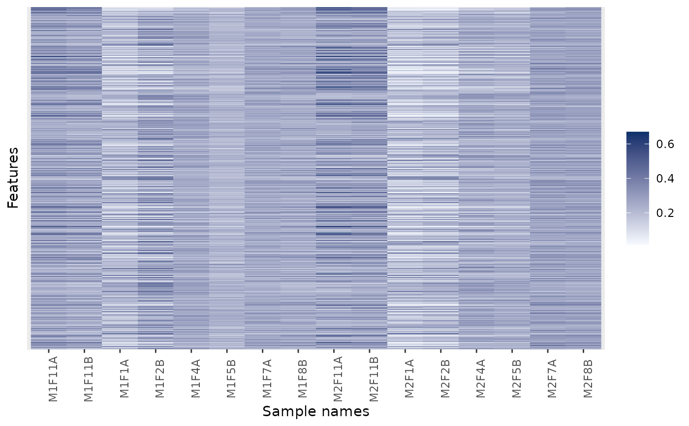
## Changing colours
image(dunkley2006, high = "darkgreen")
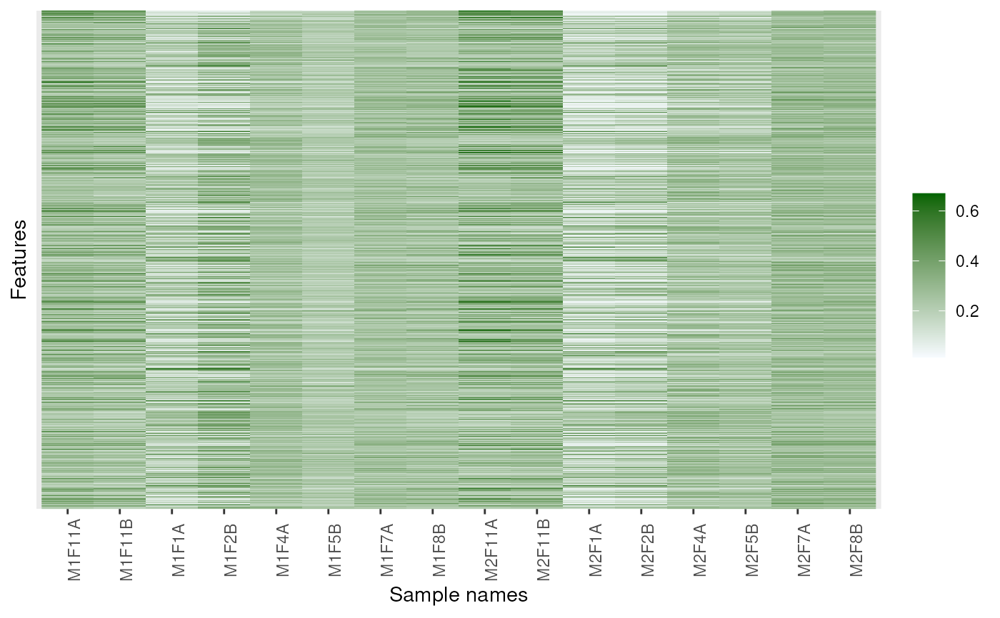
image(dunkley2006, high = "darkgreen", low = "yellow")
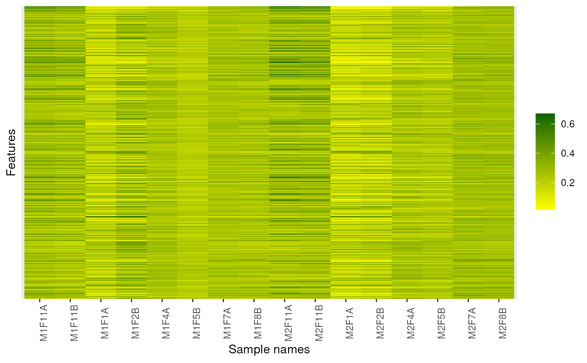
## Forcing feature names
image(dunkley2006, fnames = TRUE)
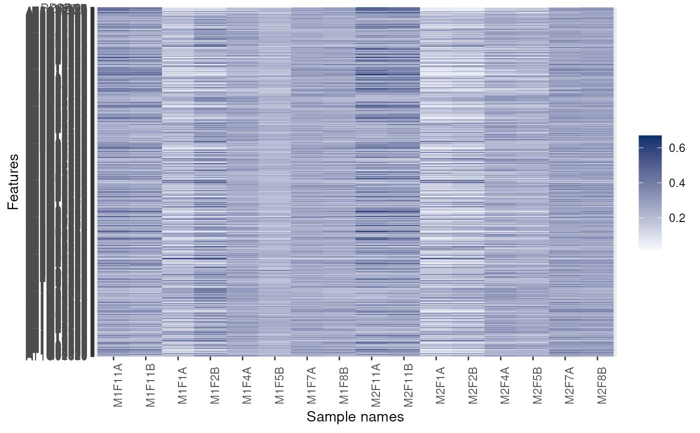
## Facetting
image(dunkley2006, facetBy = "replicate")
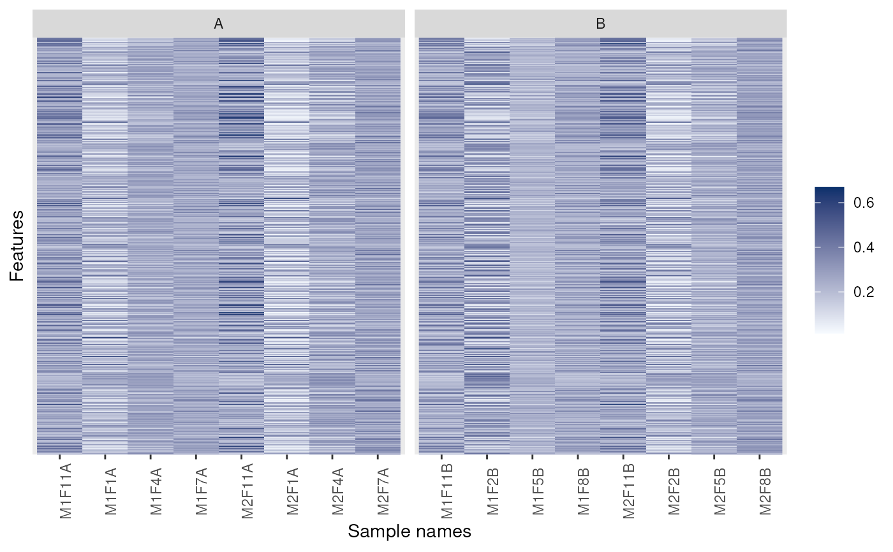
p <- image(dunkley2006)
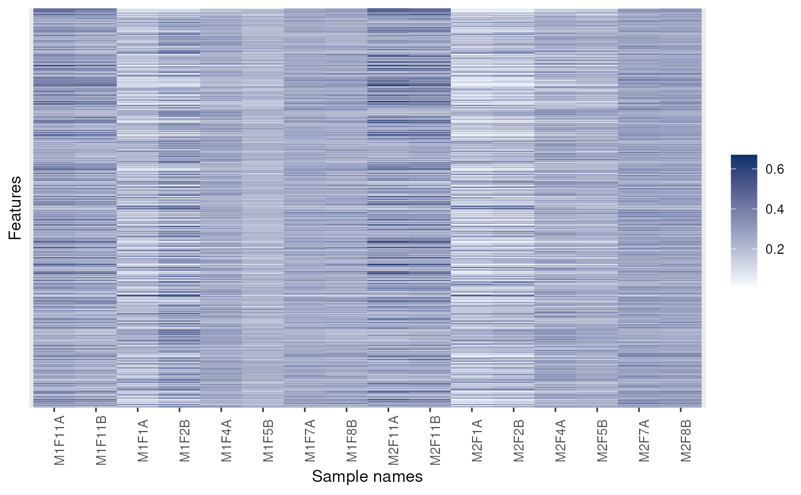
library("ggplot2") ## for facet_grid
p + facet_grid(replicate ~ membrane.prep, scales = 'free', space = 'free')
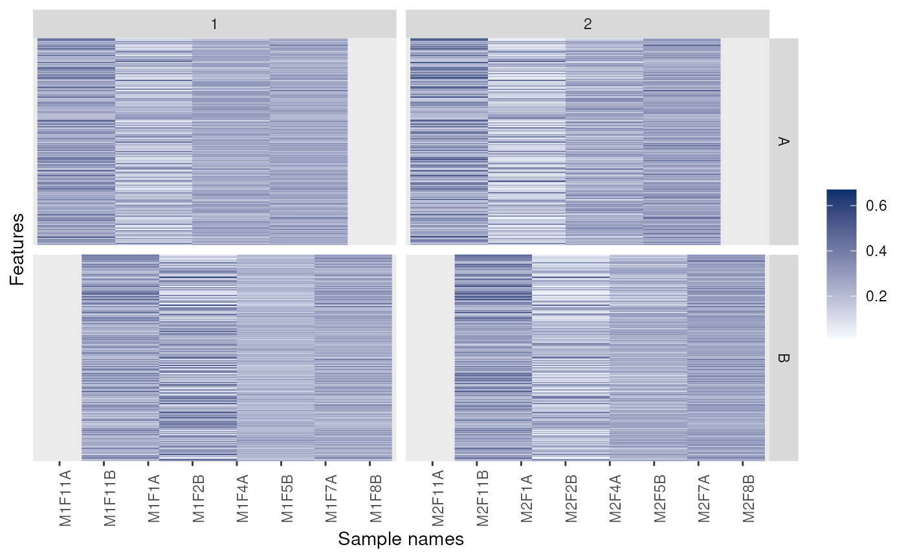
p + facet_grid(markers ~ replicate)
 ## Fold-changes
dd <- dunkley2006
exprs(dd) <- exprs(dd) - 0.25
image(dd)
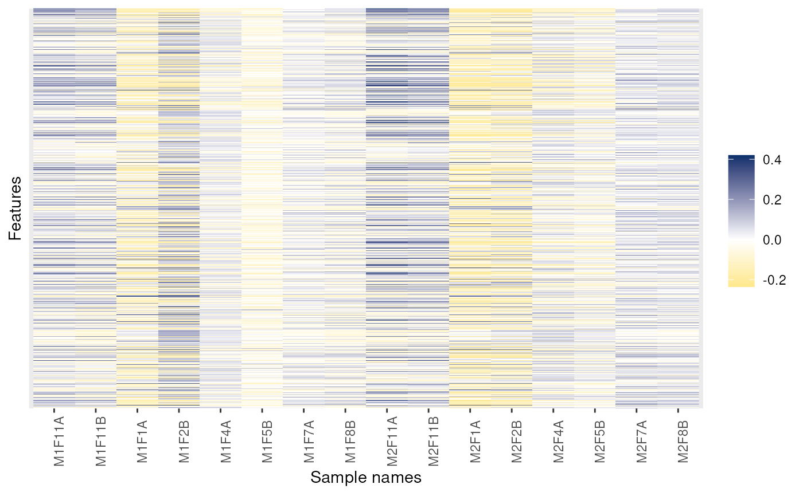
image(dd, low = "green", high = "red")
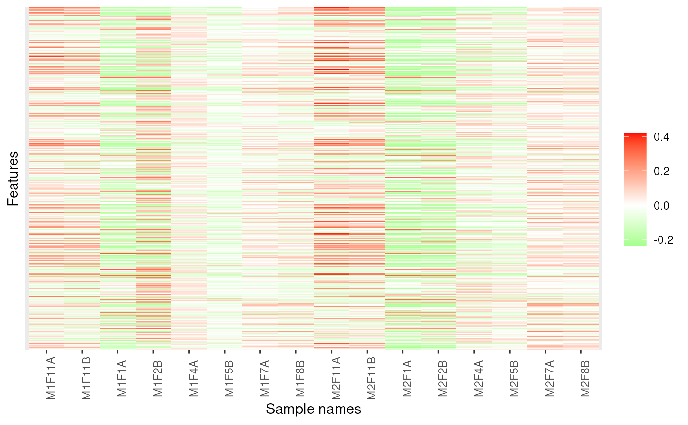
## Feature names are displayed by default for smaller data
dunkley2006 <- dunkley2006[1:25, ]
image(dunkley2006)
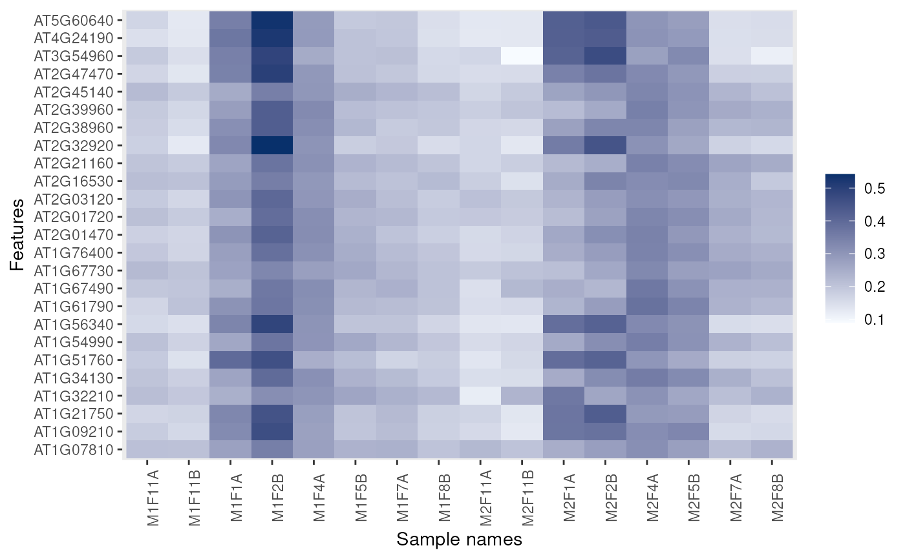
image(dunkley2006, legend = "hello")
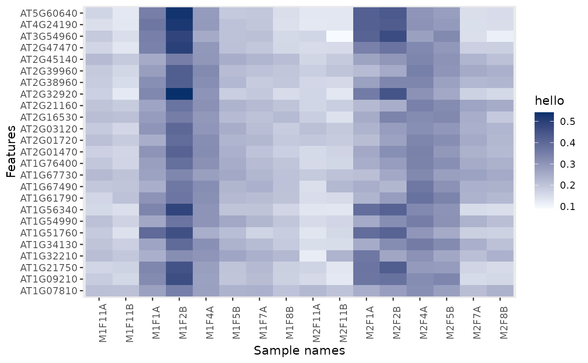
## Coercion
if (require("SummarizedExperiment")) {
data(msnset)
se <- as(msnset, "SummarizedExperiment")
metadata(se) ## only logging
se <- addMSnSetMetadata(se, msnset)
metadata(se) ## all metadata
msnset2 <- as(se, "MSnSet")
processingData(msnset2)
}
#> Loading required package: SummarizedExperiment
#> Loading required package: MatrixGenerics
#> Loading required package: matrixStats
#>
#> Attaching package: ‘matrixStats’
#> The following objects are masked from ‘package:Biobase’:
#>
#> anyMissing, rowMedians
#>
#> Attaching package: ‘MatrixGenerics’
#> The following objects are masked from ‘package:matrixStats’:
#>
#> colAlls, colAnyNAs, colAnys, colAvgsPerRowSet, colCollapse,
#> colCounts, colCummaxs, colCummins, colCumprods, colCumsums,
#> colDiffs, colIQRDiffs, colIQRs, colLogSumExps, colMadDiffs,
#> colMads, colMaxs, colMeans2, colMedians, colMins, colOrderStats,
#> colProds, colQuantiles, colRanges, colRanks, colSdDiffs, colSds,
#> colSums2, colTabulates, colVarDiffs, colVars, colWeightedMads,
#> colWeightedMeans, colWeightedMedians, colWeightedSds,
#> colWeightedVars, rowAlls, rowAnyNAs, rowAnys, rowAvgsPerColSet,
#> rowCollapse, rowCounts, rowCummaxs, rowCummins, rowCumprods,
#> rowCumsums, rowDiffs, rowIQRDiffs, rowIQRs, rowLogSumExps,
#> rowMadDiffs, rowMads, rowMaxs, rowMeans2, rowMedians, rowMins,
#> rowOrderStats, rowProds, rowQuantiles, rowRanges, rowRanks,
#> rowSdDiffs, rowSds, rowSums2, rowTabulates, rowVarDiffs, rowVars,
#> rowWeightedMads, rowWeightedMeans, rowWeightedMedians,
#> rowWeightedSds, rowWeightedVars
#> The following object is masked from ‘package:Biobase’:
#>
#> rowMedians
#> Loading required package: GenomicRanges
#> Loading required package: IRanges
#> Loading required package: GenomeInfoDb
#> - - - Processing information - - -
#> Data loaded: Wed May 11 18:54:39 2011
#> iTRAQ4 quantification by trapezoidation: Wed Apr 1 21:41:53 2015
#> Subset [55,4][6,4] Tue Apr 30 17:21:37 2024
#> MSnbase version: 1.1.22
as(msnset, "ExpressionSet")
#> ExpressionSet (storageMode: lockedEnvironment)
#> assayData: 6 features, 4 samples
#> element names: exprs
#> protocolData: none
#> phenoData
#> sampleNames: iTRAQ4.114 iTRAQ4.115 iTRAQ4.116 iTRAQ4.117
#> varLabels: mz reporters
#> varMetadata: labelDescription
#> featureData
#> featureNames: X18 X19 ... X22 (6 total)
#> fvarLabels: spectrum ProteinAccession ... collision.energy (15 total)
#> fvarMetadata: labelDescription
#> experimentData: use 'experimentData(object)'
#> Annotation: No annotation
## Fold-changes
dd <- dunkley2006
exprs(dd) <- exprs(dd) - 0.25
image(dd)
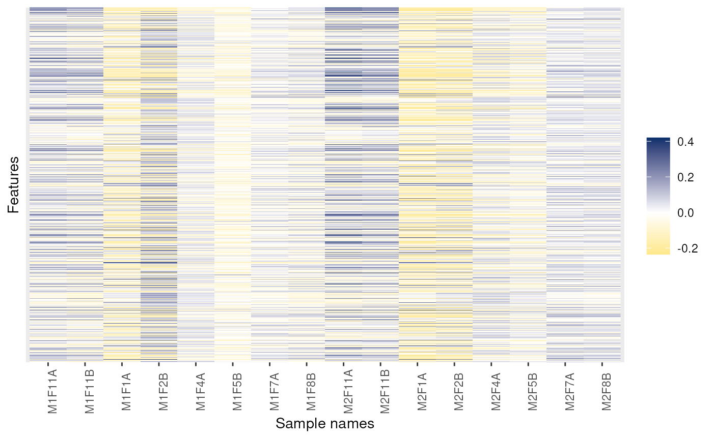
image(dd, low = "green", high = "red")
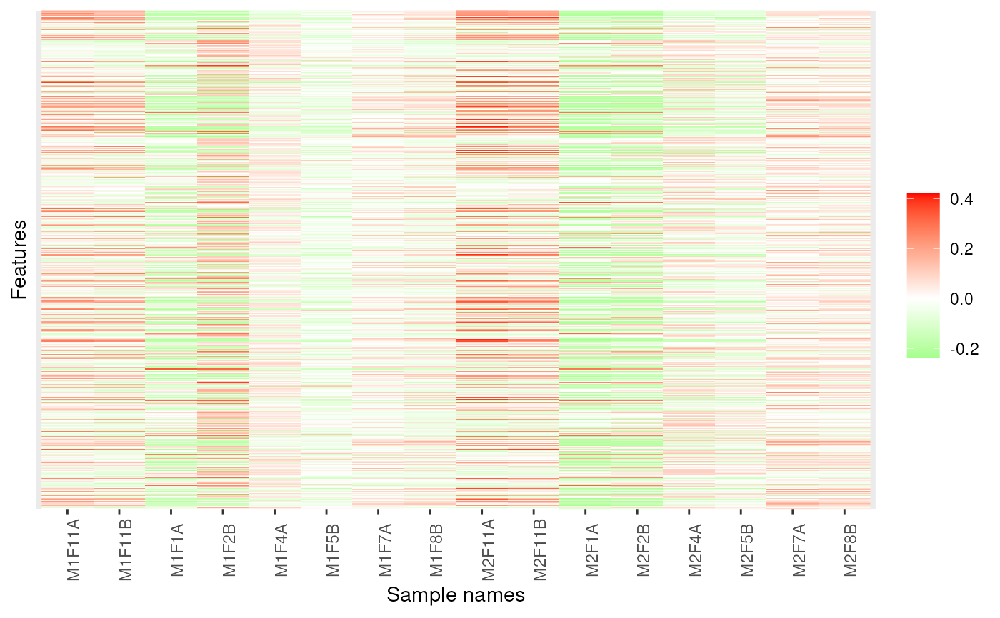
## Feature names are displayed by default for smaller data
dunkley2006 <- dunkley2006[1:25, ]
image(dunkley2006)
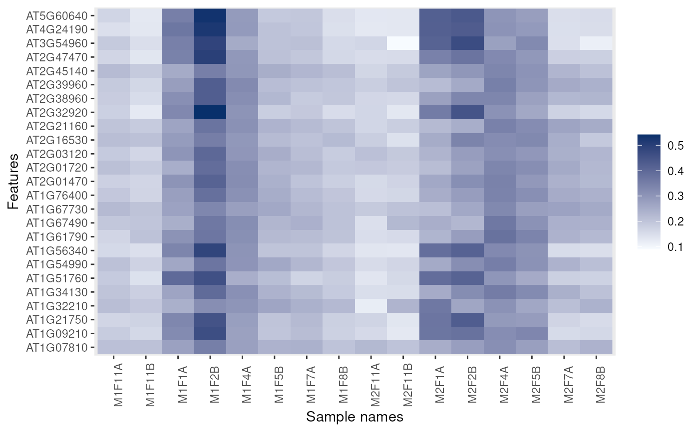
image(dunkley2006, legend = "hello")
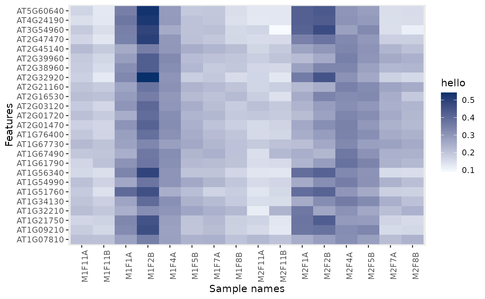
## Coercion
if (require("SummarizedExperiment")) {
data(msnset)
se <- as(msnset, "SummarizedExperiment")
metadata(se) ## only logging
se <- addMSnSetMetadata(se, msnset)
metadata(se) ## all metadata
msnset2 <- as(se, "MSnSet")
processingData(msnset2)
}
#> Loading required package: SummarizedExperiment
#> Loading required package: MatrixGenerics
#> Loading required package: matrixStats
#>
#> Attaching package: ‘matrixStats’
#> The following objects are masked from ‘package:Biobase’:
#>
#> anyMissing, rowMedians
#>
#> Attaching package: ‘MatrixGenerics’
#> The following objects are masked from ‘package:matrixStats’:
#>
#> colAlls, colAnyNAs, colAnys, colAvgsPerRowSet, colCollapse,
#> colCounts, colCummaxs, colCummins, colCumprods, colCumsums,
#> colDiffs, colIQRDiffs, colIQRs, colLogSumExps, colMadDiffs,
#> colMads, colMaxs, colMeans2, colMedians, colMins, colOrderStats,
#> colProds, colQuantiles, colRanges, colRanks, colSdDiffs, colSds,
#> colSums2, colTabulates, colVarDiffs, colVars, colWeightedMads,
#> colWeightedMeans, colWeightedMedians, colWeightedSds,
#> colWeightedVars, rowAlls, rowAnyNAs, rowAnys, rowAvgsPerColSet,
#> rowCollapse, rowCounts, rowCummaxs, rowCummins, rowCumprods,
#> rowCumsums, rowDiffs, rowIQRDiffs, rowIQRs, rowLogSumExps,
#> rowMadDiffs, rowMads, rowMaxs, rowMeans2, rowMedians, rowMins,
#> rowOrderStats, rowProds, rowQuantiles, rowRanges, rowRanks,
#> rowSdDiffs, rowSds, rowSums2, rowTabulates, rowVarDiffs, rowVars,
#> rowWeightedMads, rowWeightedMeans, rowWeightedMedians,
#> rowWeightedSds, rowWeightedVars
#> The following object is masked from ‘package:Biobase’:
#>
#> rowMedians
#> Loading required package: GenomicRanges
#> Loading required package: IRanges
#> Loading required package: GenomeInfoDb
#> - - - Processing information - - -
#> Data loaded: Wed May 11 18:54:39 2011
#> iTRAQ4 quantification by trapezoidation: Wed Apr 1 21:41:53 2015
#> Subset [55,4][6,4] Tue Apr 30 17:21:37 2024
#> MSnbase version: 1.1.22
as(msnset, "ExpressionSet")
#> ExpressionSet (storageMode: lockedEnvironment)
#> assayData: 6 features, 4 samples
#> element names: exprs
#> protocolData: none
#> phenoData
#> sampleNames: iTRAQ4.114 iTRAQ4.115 iTRAQ4.116 iTRAQ4.117
#> varLabels: mz reporters
#> varMetadata: labelDescription
#> featureData
#> featureNames: X18 X19 ... X22 (6 total)
#> fvarLabels: spectrum ProteinAccession ... collision.energy (15 total)
#> fvarMetadata: labelDescription
#> experimentData: use 'experimentData(object)'
#> Annotation: No annotation